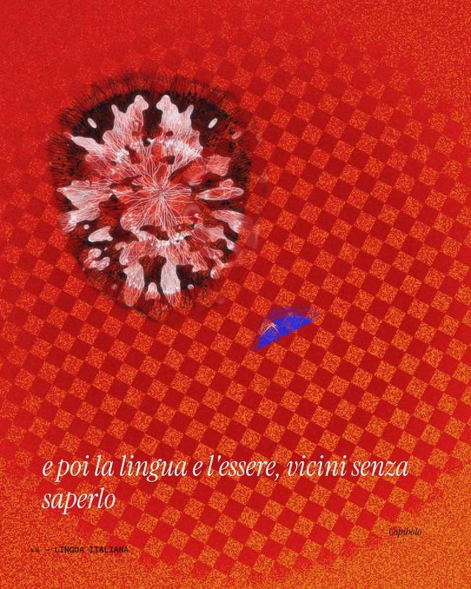

Giorno 1862

E poi la lingua e l'essere, vicini senza saperlo
ho letto "Grande"; "grande" lo capisco solo per definizioni; mi sta vicino a strada, rosso, nome, giornalista; nel suo significato c'è centrista; ricerca "grande" (approfondire): grande: è una cosa o un gesto?; esercizio di varietà: mai fatto prima: materiale nuovo, composizione nuova; enunciato: «e poi la lingua e l'essere, vicini senza saperlo» (proseguo da ieri: là arrivavo a lingua, da qui vado a essere)
Oggi: lingua. Ho letto "Grande"; "grande" lo capisco solo per definizioni; mi sta vicino a strada, rosso, nome, giornalista; nel suo significato c'è centrista; ricerca "grande" (approfondire): grande: è una cosa o un gesto?; esercizio di varietà: mai fatto prima: materiale nuovo, composizione nuova; enunciato: «e poi la lingua e l'essere, vicini senza saperlo» (proseguo da ieri: là arrivavo a lingua, da qui vado a essere).
Da Wikipedia: «skei grande politica».
Ho scena:pattern, scena:semina, scena:grana, scena:luce, scena:colore, scena:stile, scena:motivi, scena:taglia, redazione:togli, redazione:griglia, redazione:firma. Ho annullato 5 gesti dopo averli guardati.
Lingua, quasi linguaggio. Linguaggio, quasi argot.
Ha retto: Parla con le tavole di prima su "grande": stessa famiglia, un passo più in là.
È caduto: Non mi insegna niente (interesse 35%).
come ne ho discusso con me stesso — la tengo
occhio (pro, 1.50): Parla soprattutto per punti: una lingua sola, chiara. — regge
occhio (pro, 1.00): Le diagonali (53%) mettono tutto in caduta. — regge
memoria (contro, 0.15): L'ho già fatta, quasi uguale (novità 14%). — cade
memoria (contro, 0.10): La mano si ripete: scena:semina, scena:grana, scena:luce, scena:stile, scena:motivi, redazione:togli, redazione:griglia, redazione:firma ancora una volta. — regge
intenzione (pro, 0.75): Viene da: Grande. — regge
coerenza (pro, 1.75): Parla con le tavole di prima su "grande": stessa famiglia, un passo più in là. — regge
pubblico (pro, 1.00): Si legge: si capisce cosa sto facendo. — regge
distruttore (contro, 1.37): Non mi insegna niente (interesse 35%). — cade
materia (pro, 1.00): Ha una pelle: si sente la materia. — regge